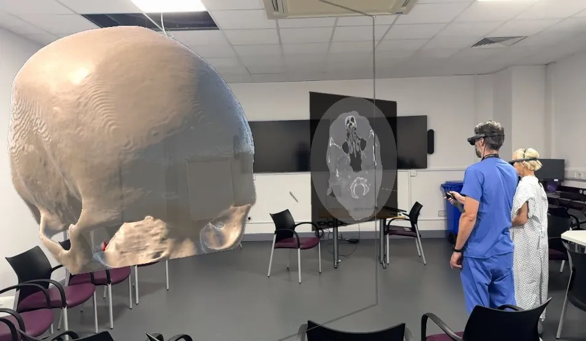

NHS Trials Next-Generation Medical Technologies, from AI Diagnostics to 3D Imaging


By Oliver Grant


There is a small but important change happening in NHS hospitals that medical professionals believe could completely change how patients are diagnosed, tracked, and treated. Next-generation medical technologies are moving from research labs to real-life hospitals. For example, AI systems can find problems that aren't visible in scans, and 3D imaging tools can show joint and tissue damage in ways that have never been seen before.
For clinicians, the promise is simple but powerful: faster diagnosis, more personalised treatment, and less strain on overstretched NHS staff.
At Royal Devon University Healthcare NHS Trust, for instance, rheumatoid-arthritis patients are among the first in the UK to trial a new 3D imaging technique. Instead of relying solely on traditional scans, specialists can now rotate a detailed, layered model of a patient’s affected joints—pinpointing inflammation and early deterioration that might otherwise be missed. One patient described the experience as “like watching my own body explained back to me”, saying the clarity allowed them to finally understand the root of their symptoms.
In the meantime, hospitals in Birmingham, Manchester, and London are testing AI-assisted diagnostic tools to help radiologists, who have some of the hardest jobs in medicine. These systems can scan thousands of pictures in a few seconds and find anything strange, like fractures or cancers, that specialists need to look at. Doctors say that AI is not a replacement for human judgment; instead, it is like having a second pair of eyes that helps professionals see what is most important.
"It's not about taking away doctors' choices," said a radiology consultant. "The goal is to spend less time in front of screens and more time with patients."

A lot of people are also using health technology that they can wear. NHS trusts are testing out wrist gadgets and smart patches that always keep track of heart rhythms, blood oxygen levels, and glucose levels. Because of this, people who are sick for a long time feel better at home and don't have to go to the hospital as often.It lets doctors know what's going on with a patient's health before a crisis happens so they can see if it's getting worse.
A patient with heart failure who took part in a pilot study in Leeds said that the device gave them "peace of mind for the first time in years" because it helped them find problems and change their prescription with their doctor's help.
Hospitals are looking into AI-powered administrative systems that can help doctors and nurses do more than just figure out what's wrong with patients.People are making appointments more and more often with automated triage systems, robotic process automation, and computerized symptom checkers.These technologies work together to free up important clinical time, which NHS workers say is the most important resource.
Using new technologies quickly can lead to new problems. Patient groups and doctors stress how important it is to be open, safe, and honest. They also want clear rules for protecting patient information and checking AI decisions. NHS officials stress that a new system must be thoroughly tested before it can be used on a regular basis.A lot of trial sites are still cautiously hopeful.Because of operational stress, staffing shortages, and rising demand, people no longer see technology as a long-term solution that will take years to develop. They don't see it as a problem; they see it as a useful tool that is already making a difference.
The NHS is ready for a new era in which people and technology work together as these programs grow. Patients can get better, more personalized care, therapy faster, and a diagnosis sooner. This new technology could also be a big step toward a stronger and better future for a large group like the NHS.
Tech